Miyabe_Keijun_Strategic_Career_Pivot.pdf 全12ページ 全文公開
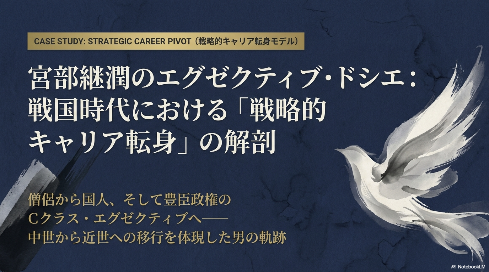
宮部継潤のエグゼクティブ・ドシエ: 戦国時代における「戦略的キャリア転身」の解剖
僧侶から国人、そして豊臣政権のCクラス・エグゼクティブヘ―――― 中世から近世への移行を体現した男の軌跡
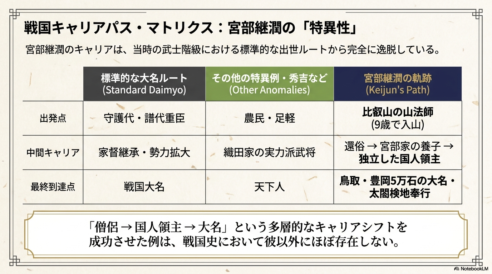
宮部継潤のキャリアは、当時の武士階級における標準的な出世ルートから完全に逸脱している。
・「僧侶→国人領主→大名」という多層的なキャリアシフトを成功させた例は、戦国史において彼以外にほぼ存在しない。
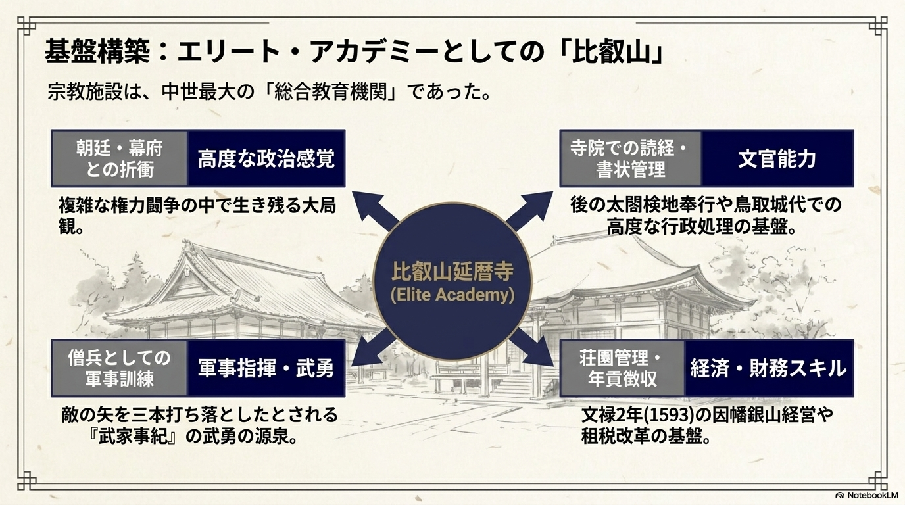
宗教施設は、中世最大の「総合教育機関」であった。
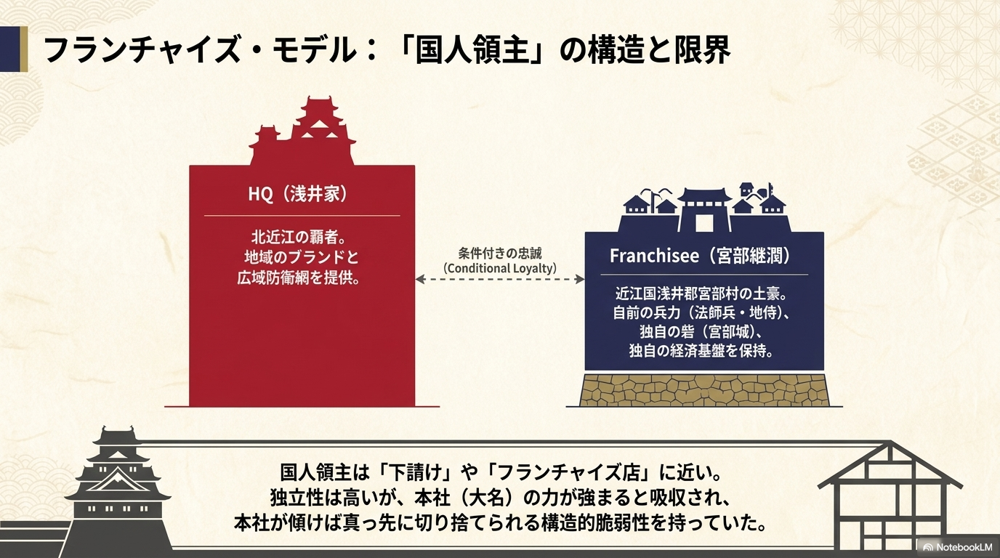
HQ(浅井家)：北近江の覇者。地域のブランドと広域防衛網を提供。
条件付きの忠誠 (Conditional Loyalty)
Franchisee(宮部継潤)：近江国浅井郡宮部村の土豪。自前の兵力(法師兵・地侍)、独自の砦(宮部城)、独自の経済基盤を保持。
国人領主は「下請け」や「フランチャイズ店」に近い。独立性は高いが、本社 )の力が強まると吸収され、本社が傾けば真っ先に切り捨てられる構造的脆弱性を持っていた。
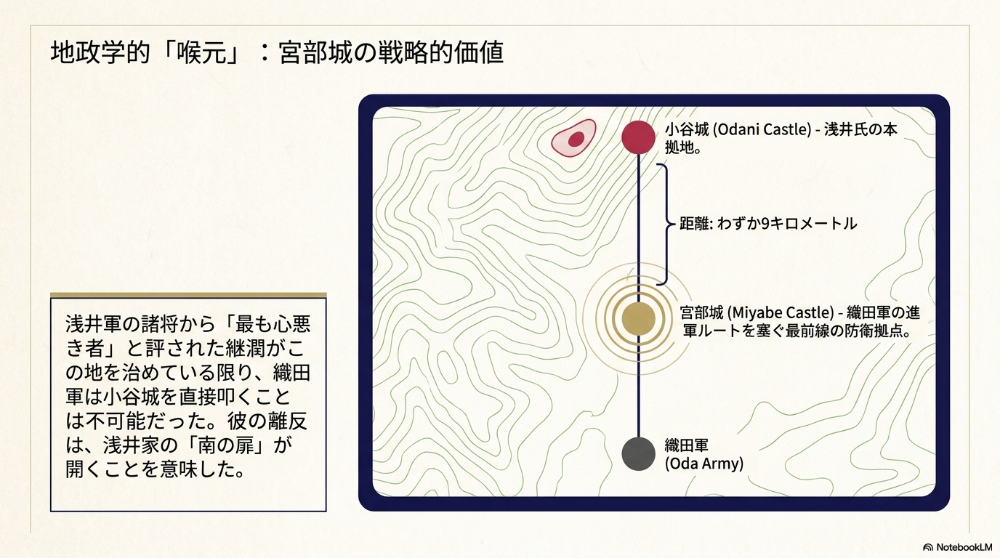
小谷城(Odani Castle) - 浅井氏の本拠地。
距離: わずか9キロメートル
浅井軍の諸将から「最も心悪き者」と評された継潤がこの地を治めている限り、織田軍は小谷城を直接叩くことは不可能だった。彼の離反は、浅井家の「南の扉」が開くことを意味した。
宫部城 (Miyabe Castle) - 織田軍の進軍ルートを塞ぐ最前線の防衛拠点。
織田軍 (Oda Army)
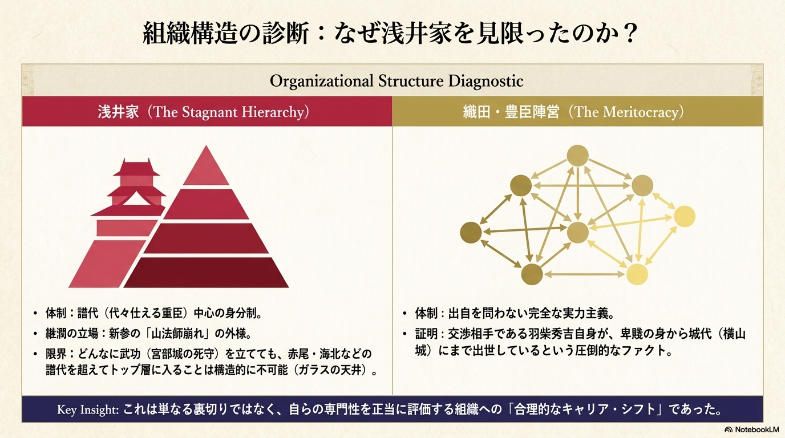
Organizational Structure Diagnostic
浅井家(The Stagnant Hierarchy)
織田・豊臣陣営(The Meritocracy)
Key Insight: これは単なる裏切りではなく、自らの専門性を正当に評価する組織への「合理的なキャリア・シフト」であった。
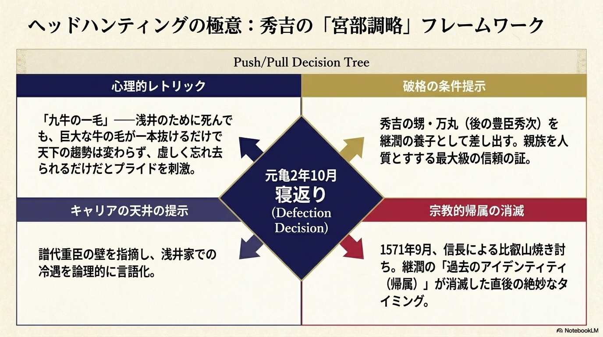
Push/Pull Decision Tree
心理的レトリック：
「九牛の一毛」 浅井のために死んでも、巨大な牛の毛が一本抜けるだけで天下の趨勢は変わらず、虚しく忘れ去られるだけだとプライドを刺激。
キャリアの天井の提示：譜代重臣の壁を指摘し、浅井家での冷遇を論理的に言語化。
破格の条件提示：秀吉の甥・万丸(後の豊臣秀次)を継潤の養子として差し出す。親族を人質とすする最大級の信頼の証。
宗教적 帰属の消滅：1571年9月、信長による比叡山焼き討ち。継潤の「過去のアイデンティティ(帰属)」が消滅した直後の絶妙なタイミング。
寝返り (Defection Decision) 元亀2年10月
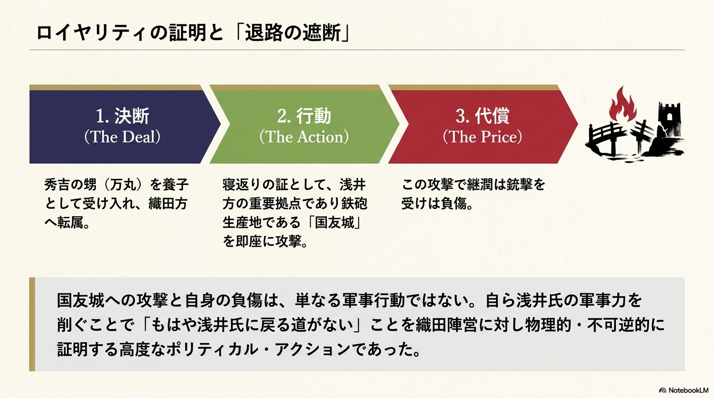
国友城への攻撃と自身の負傷は、単なる軍事行動ではない。自ら浅井氏の軍事力を削ぐことで「もはや浅井氏に戻る道がない」ことを織田陣営に対し物理的・不可逆的に証明する高度なポリティカル・アクションであった。
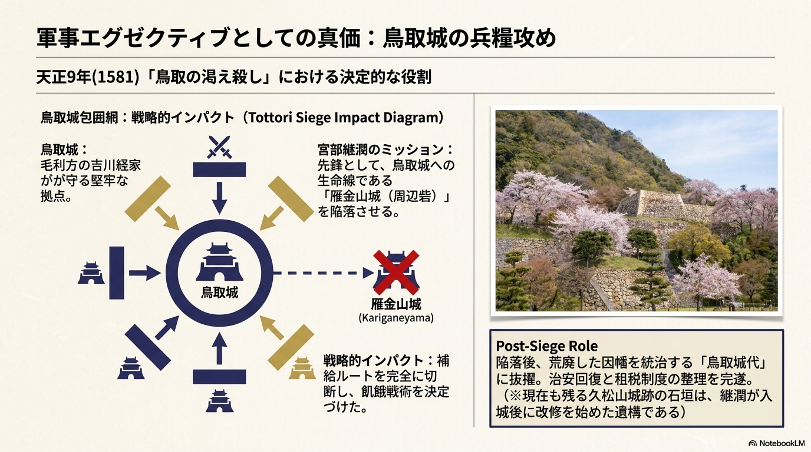
天正9年(1581) 「鳥取の渇え殺し」における決定的な役割
鳥取城包囲網:戦略的インパクト (Tottori Siege Impact Diagram)
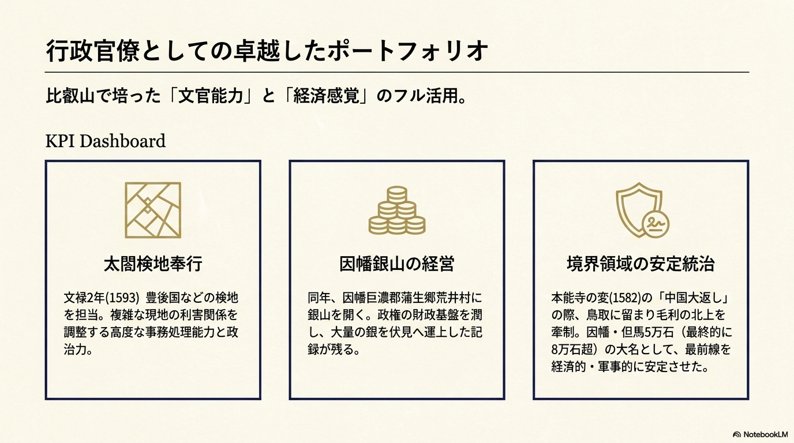
比叡山で培った「文官能力」と「経済感覚」のフル活用。
KPI Dashboard
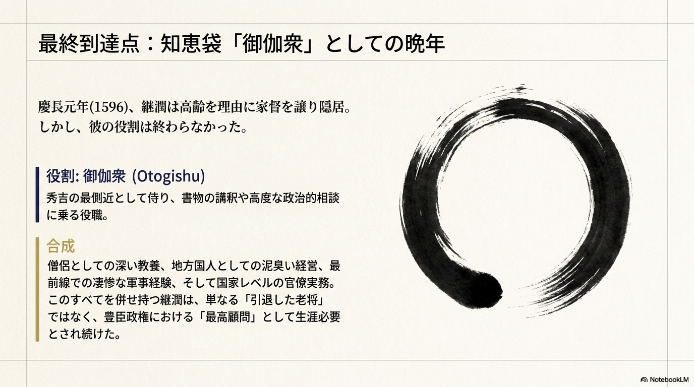
慶長元年(1596)、継潤は高齢を理由に家督を譲り隠居。しかし、彼の役割は終わらなかった。
役割: 御伽衆(Otogishu)
秀吉の最側近として侍り、書物の講釈や高度な政治的相談に乗る役職。
合成：僧侶としての深い教養、地方国人としての泥臭い経営、最前線での凄惨な軍事経験、そして国家レベルの官僚実務。このすべてを併せ持つ継潤は、単なる「引退した老将」ではなく、豊臣政権における「最高顧問」として生涯必要とされ続けた。
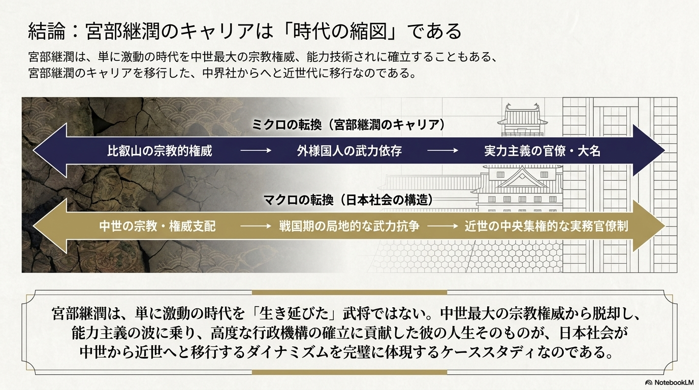
宮部継潤は、単に激動の時代を中世最大の宗教権威、能力技術されに確立することもある、宮部継潤のキャリアを移行した、中界社からへと近世代に移行なのである。
ミクロの転換(宮部継潤のキャリア)
比叡山の宗教的権威 → 外様国人の武力依存 → 実力主義の官僚・大名
マクロの転換(日本社会の構造)
中世の宗教・権威支配 → 戦国期の局地的な武力抗争 → 近世の中央集権的な実務官僚制
宮部継潤は、単に激動の時代を「生き延びた」武将ではない。中世最大の宗教権威から脱却し、能力主義の波に乗り、高度な行政機構の確立に貢献した彼の人生そのものが、日本社会が中世から近世へと移行するダイナミズムを完璧に体現するケーススタディなのである。